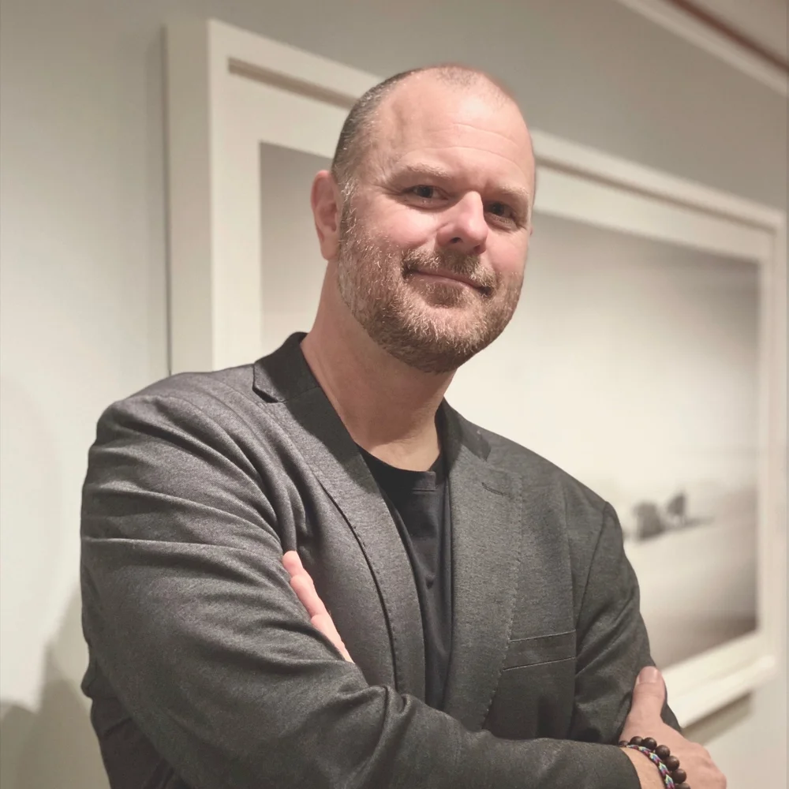

About
Jeff Gaydash is an award-winning fine art photographer and printmaker based in Detroit, Michigan. He received a BFA in photography at Detroit’s College For Creative Studies in 1995. While studying at CCS, Jeff gained an appreciation for the work of the early photographic masters and their historical printing processes.
During this time, digital imaging technologies were beginning to emerge. Realizing its potential, Jeff embraced it with open arms and began melding historical photographic printing processes with cutting edge imaging technologies. As an early adopter of digital photography, Jeff partnered in a commercial photography and digital imaging studio where he continually explored and pushed the limits of this new medium.
In 2010, Jeff made a conscious decision to move away from commercial work and refocus his efforts on his true passion of black and white fine art photography. Having finally discovered a digital printing solution that matched — and in many ways exceeded — traditional darkroom printing, Jeff built a digital print studio to create his fine art editions and in 2011 started offering his printing knowledge, expertise, and services to others.
Jeff Gaydash is founder and owner of Jeff Gaydash Studios, LLC., a photographic printmaking studio specializing in fine art black and white digital printing services. Jeff has printed editions for photographers worldwide, including: The U.S., Canada, Brazil, The U.K., The Netherlands, Sweden, Germany, Switzerland, Greece, Italy, and New Zealand.
For more information on Jeff’s printing services, visit Jeff Gaydash Studios.